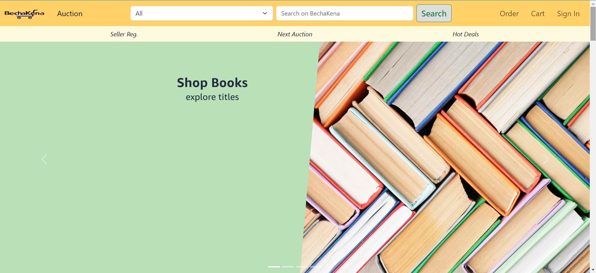
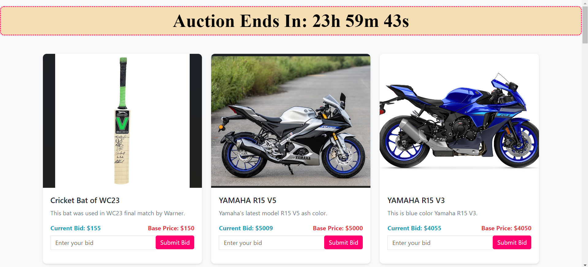
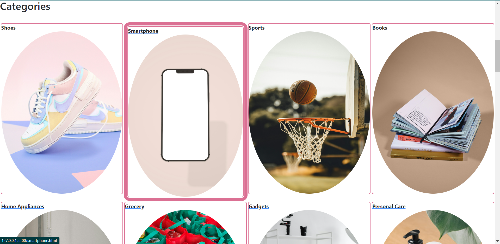
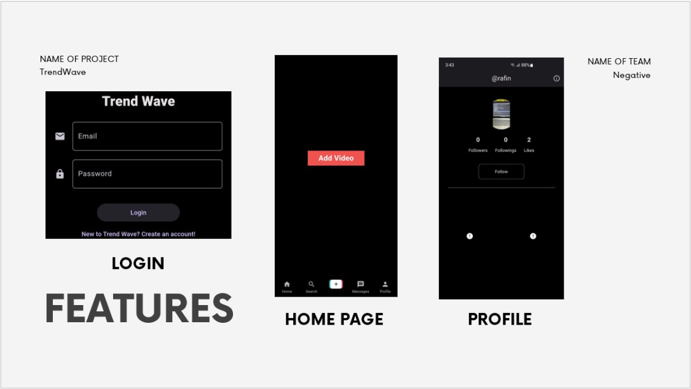
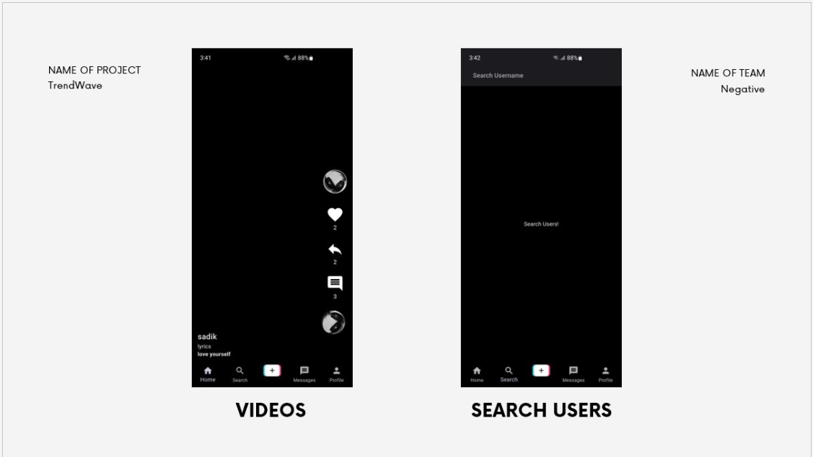
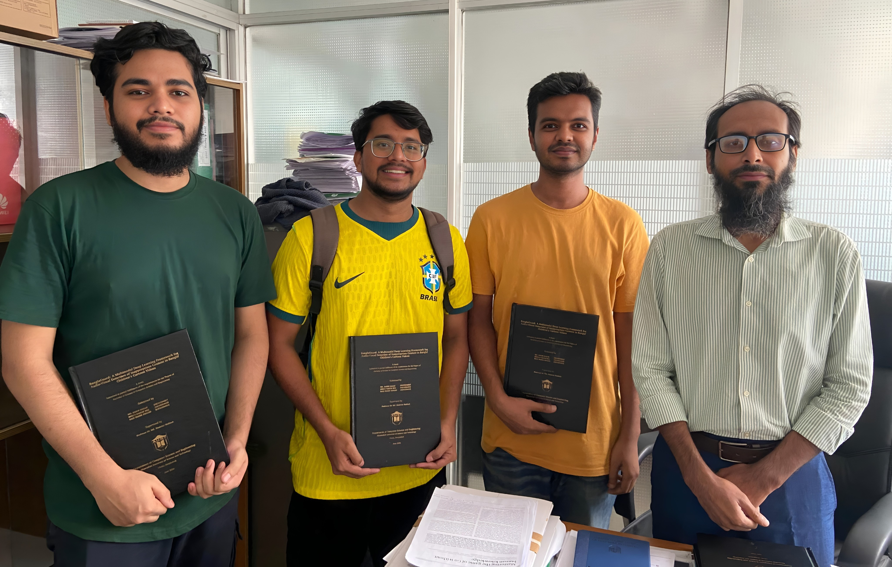

Open to work: Junior/Trainee level Software, Data or AI roles
Aspiring AI engineer turning language, vision, and data into working software, starting with Bangla, a language that still lacks good tools.
My research interests are NLP, computer vision, LLMs, and deep learning, especially AI for healthcare and low-resource language processing. Day to day, most of my work is in Python with PyTorch, SQL, Pandas, NumPy, Matplotlib, and a few other libraries and frameworks.
The plan is simple: to start in a Junior or Trainee level Software, Data, or AI role where I can learn from experienced engineers. From there, I'd like to grow into Software, Data, or Cloud Engineering, and eventually work as a Data Scientist or AI Engineer, which is the goal that excites me most.
Most of these skills came from my thesis and course projects, with plenty of self-study along the way. I also take professional, skill-based courses on Coursera and other platforms that fit my research interests and career goals. To build my AI engineering skills from the foundations, I'm following a roadmap I put together after looking closely at AI job posts and the skills they ask for.
What I'm looking for
A full-time, Junior or Trainee level Software, Data or AI role. I'm open to remote work, or on-site work in Dhaka.
Progressive Model School, Mymensingh · GPA 5.0 / 5.0
Coursework
I finished the programme by the grace of Almighty: 156 credits, of which 33 were labs and projects, all version-controlled and public in my lab repository. Full syllabus (Bulletin Spring 2020).
Closest to my focus: Data Structures, Algorithms, Object Oriented Programming, Database Management Systems, Operating Systems, Computer Networks, Introduction to AI, Pattern Recognition & ML, Soft Computing, Digital Image Processing, Software Development I–V, and Mathematics I–IV.
Technical writing, presentations and clear issue reporting, shown in thesis documentation and project reports.
02
Collaboration
Cross-functional teamwork, code reviews and mentoring, across the thesis, Pattern Recognition & ML, the Soft Computing research paper, and the DoomExploder, TrendWave and railway system group projects.
03
Problem solving
Debugging, root-cause analysis and algorithmic thinking, from competitive programming practice to BanglaGuard model optimisation.
04
Research mindset
Reading papers, experimenting with models and never being done learning, applied through the BanglaGuard thesis and my ML coursework.
05
Attitude
Willingness to learn, take responsibility, and work collaboratively with seniors.
End of 02 · Academic
Skills03Toolbox
Languages
Python
C
C++
SQL
Java
OOP in Java and Python
Deep learning
RNNs
LSTM
CNN training
Transfer learning
Transformers
Computer vision
Image classification
Video analysis
Object detection
NLP
Model fine-tuning
Text classification
Sentiment analysis
Data & ML tools
NumPy
Pandas
Jupyter
Kaggle
VS Code
scikit-learn
PyTorch
Matplotlib
MATLAB
Shell
Databases
PostgreSQL
MySQL
MS SQL Server
Web
HTML
CSS
Bootstrap
JavaScript
TailwindCSS
React
Version Control & Tools
Git
GitHub
Docker
Power BI
End of 03 · Toolbox
Research04Papers
Undergraduate thesisAUST · 2026 · Under review
BanglaGuard: A Multimodal Deep Learning Framework for Audio-Visual Detection of Inappropriate Content in Bangla Children's Cartoon Videos
Supervised by Prof. Dr. Md. Shahriar Mahbub. Submitted as my undergraduate thesis and now under review for conference publication.
Digital Preservation of Culinary Heritage: A System for Classifying Bangladeshi Desserts and Generating Traditional Recipes
A deep learning pipeline that classifies 4,118 Bangladeshi dessert images across 27 categories (EfficientNet-B0 vs ResNet-18) and generates traditional recipes from a corpus of 81 authentic recipes (GPT-2 vs T5, with GPT-2 performing best).
Multi-modal dataset of dessert images and authentic recipes, publicly available on Mendeley.
CNN comparison for dessert classification and LLM-based recipe generation.
A framework for digital preservation of culinary heritage.
An e-commerce platform with an integrated real-time auction feature, where users can browse, bid on, and purchase products. I built it on my own with PHP, MySQL and Bootstrap, and most of the demanding e-commerce features are in place.



Key features
Integrated auction with real-time bidding.
Most of the demanding e-commerce features are implemented.
02TrendWave: inspired by TikTokTeamFlutterDartFirebase
Software Development IIITeam2024
A TikTok-inspired short-video mobile app with video sharing, user profiles, and social interactions. We built it as a team with Flutter, Dart and Firebase.


My part
Contributed to designing the UI/UX.
Implemented Firebase and the login page.
Coordinated the team and delivered the final presentation.
03DoomExploder: an action gameTeamC / C++iGraphics
Software Development ITeam2023
A 2D action game with sound and graphics integration, built collaboratively using C/C++ and the iGraphics framework.
A desktop railway ticket booking system with a Java Swing GUI and a MySQL back end, built on object-oriented design principles.
Key features
Desktop interface built with Java Swing.
MySQL back end for the booking data.
Structured around object-oriented design principles.
End of 05 · Projects
Thesis06Memory

29 June 2026Thesis book submission, with our supervisor Prof. Dr. Md. Shahriar Mahbub.
BanglaGuard
A multimodal deep learning framework for audio-visual detection of inappropriate content in Bangla children's cartoon videos. It combines EfficientNet-based CNNs for visual features, a BiLSTM for temporal modelling, and a spectrogram-based CNN for Bangla audio classification.
87.02%accuracy on a purpose-built dataset of 871 clips
video frames→EfficientNet→BiLSTM
Bangla audio→spectrogram→CNN
fused → appropriate / inappropriate
I always seek the kind consideration, blessings, and goodwill of each and every one of you. May Allah bless you all.